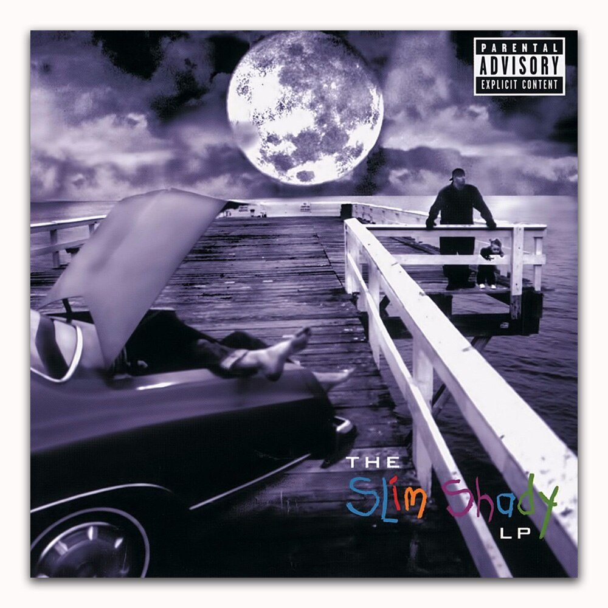
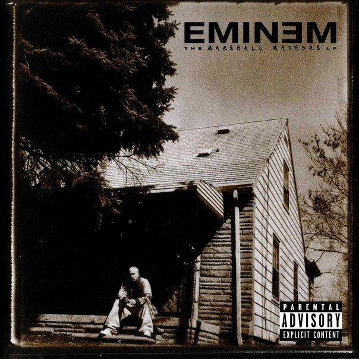
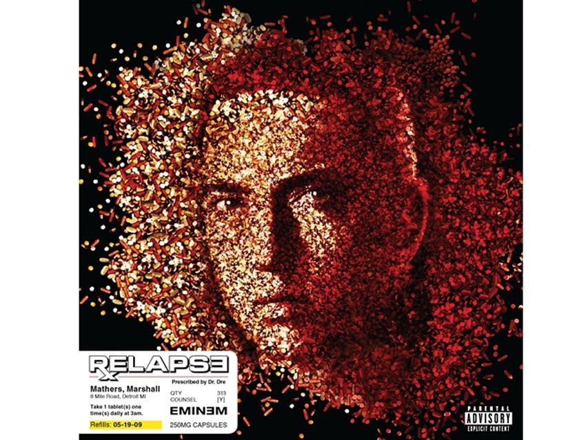
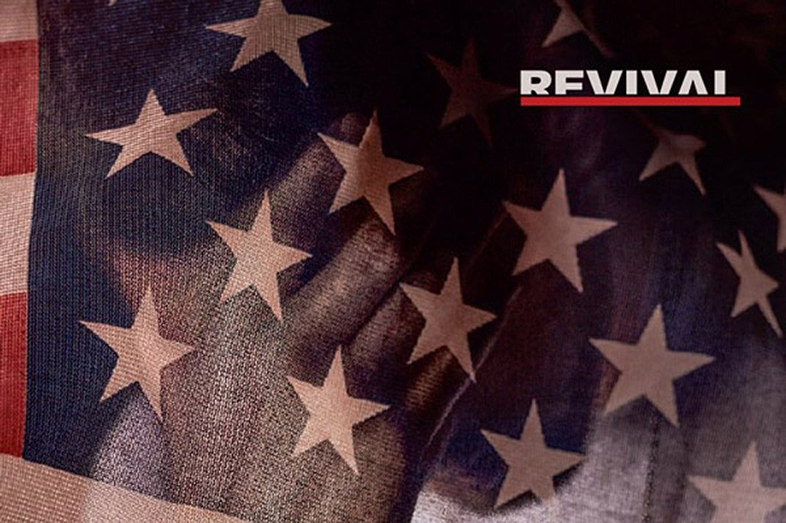

Hi, Sasha. In 2022 there wasn't much room for new music, so this time my gift text for your birthday celebrates an anniversary: it's about an artist who turned 50 this fall.
You'd think nothing could be more boring than writing about Eminem, whose every sneeze has long been examined under a microscope. Isn't everything long since clear to everyone?
I don't think it is.
First, some things only become clear when you dig into the annotations on Genius. I've been digging, and I want to share what I found.
And second, Eminem's story lets you draw interesting conclusions not only about him but about music and people in general. I wanted to draw them.
So I decided to describe his whole career, roughly dividing it into eight "roles".
Role 1: The nerd
The beginning of his career has well-known biographical details: grim Detroit, poverty, bullying, an absent father, conflicts with his mother and his wife, pennies from odd jobs to feed his daughter, and the rap scene that helped him get out of it.
But there's a less familiar part. Eminem burst into the public eye in 1999, but his first album was «Infinite» (1996). Why does almost nobody remember it now? What was it, anyway?

If you put it on, you quickly notice that even then Eminem was very technical about phonetics and flow, packing his lyrics with as many sound echoes as possible:
Man, I got evidence, I'm never dense
And I've been clever ever since
You can spot a lyrics nerd right away: all rappers want to sound slick, but here it already looks like obsessive-compulsive disorder.
But technique is where it ends: there are no sharp jokes yet, no virtuoso storytelling, no unique charisma. And the themes are standard ("I'm cool", "Detroit, my hometown, I'm yours"). The album isn't bad, you can enjoy it, but there's nothing much to hold on to; even the cover is a model of blandness. No wonder it went unnoticed.
And I think we can draw this moral: although technique in music can impress, it's fairly pointless when it's just technique for its own sake, cut off from everything else.
As another rapper, Oxxxymiron, put it many years later, in a Russian battle:
It's not about the number of punchlines, not the quality of the rhymes:
It's about the person behind them
And on this album you can't yet really hear the person. Critics wrote that he "copies Nas and AZ", listeners didn't buy the album, and that made Eminem angry.
Role 2: The maniac
Besides his solo work, Eminem was part of the Detroit group D12. His friend Proof was in it, and he suggested that every member come up with an alter ego; that's how the character Slim Shady was born.
Because of the failure of «Infinite», Eminem was angry at the world, and speaking as a made-up character makes it easy to say anything: if need be, "I'm out of it, I didn't say that, it was all him".
So the second album, «The Slim Shady LP» (1999), became a chance to pour everything out. And this time even gangsta rap listeners, supposedly used to all kinds of brutality, were stunned.
What could stun them? For example, the song «'97 Bonnie & Clyde». It plays on Will Smith's «Just the Two of Us», a sweet track about a father and his child. And in Eminem's lyrics, a loving father talks to his little daughter on the way to the beach. Only in this case he has killed his wife and is now on his way to get rid of the body. This made it onto the album cover:

As someone wrote, "there have been more violent songs in rap, but few more disturbing". The character coos at the child, and it sounds scarier than rappers swearing and making threats. Street hip-hop is harsh, but even there they usually don't drag small children into the brutality. Slim Shady has no such limit. He's more deranged than the deranged.
And it's creepier still because the pet name the character uses for the child is short for Hailie, the name of Eminem's real daughter. And the song uses a recording of her voice. And Eminem didn't get along with her mother, Kim. If I were the real Kim, after a song like that I'd have fled to another continent with Hailie on a fake passport.
And that's just one of the songs on «The Slim Shady LP». The album's lyrics are violence, jokes beyond the pale, swearing, unhealthy sex, mental health problems, drugs, suicide and insults to his own mother. All of it is cranked to the max, so it often looks cartoonish and unserious (the clownish hit «My Name Is»), but sometimes frighteningly real (the hard-won monologue about poverty, «Rock Bottom»). If Tarantino made an animated, blood-soaked gay porn film about a destitute killer clown on hallucinogens, even that would feel less extreme, provocative and eclectic.

(the lyrics in this video version are heavily toned down; the album version is better)
Slim Shady drew orders of magnitude more attention than the bland «Infinite». Some were delighted, including Dr. Dre, who helped it succeed. Others were horrified, for example conservative parents who noticed what music their kids had come to love. Eminem went from a nobody to both a hero and a villain. He was accused of everything at once, from homophobia to provoking school shootings. His mother decided to sue him for millions over defamation in his lyrics.
To accusations of brutality, he replied that people get killed in horror films too and nobody cares, but tell the same story in a song and everyone loses their mind. I'd also note that «The Slim Shady LP» has the song «Role Model», which sarcastically lets young listeners know they shouldn't look up to the author, and that the things in his songs aren't exactly a good guide to action.
Later, in «The Real Slim Shady», he voiced this point: the only difference between him and you is that he has the balls to say out loud, in public, the things you won't. He gave the floor to his inner demons and came to look like a maniac. But lots of people have demons; they're just usually not handed a microphone. So it turns out Eminem is even more self-aware than many: at least he says all this honestly, instead of pretending it doesn't exist.
You could chalk up all the criticism of Eminem to a puritanical society eager to blame someone for its problems ("all these school shootings are because of hip-hop"). But I don't think all the criticism is groundless. Say, when women's dying gasps become a recurring sound effect in songs, I do find that genuinely problematic. I don't think it's a reason to cancel artists, but I think it's a reason to consider how such music shapes people's view of the world, and what age rating is right for it.
And here's the moral I see. In discussions of all kinds of problematic art, positions are usually binary: either "it's problematic, let's do without it", or "it's talented, let's not infringe on free speech". But I think «The Slim Shady LP» clearly shows that "it's talented" and "it's problematic" are not mutually exclusive. "Great and terrible" is usually a figure of speech, but this is literally a great album and a terrible album.
Role 3: The idol
«The Slim Shady LP» brought a big surge in popularity, but total dominance came next, with «The Marshall Mathers LP» (2000) and the film «8 Mile» (2002).
«The Marshall Mathers LP» became one of the best-selling albums in history. Did anything change in his work compared to «The Slim Shady LP»? At first glance it's a direct continuation: «'97 Bonnie & Clyde» even got a prequel here, «Kim». The clownish hit «My Name Is» was succeeded by the clownish hit «The Real Slim Shady». Violence, insults, drugs: it's all on the album, even the characters in the skits are the same.
But I see differences too. One is right in the album's title, where Marshall Bruce Mathers used his real name. There's a title track where he speaks as himself, without any Slim Shadys, calling himself just a regular guy who doesn't know why there's so much fuss about him. And the cover shows not invented horrors but the porch of his childhood home.

Another tectonic shift happened too. A typical complaint about early Eminem was "it's shock-value bubblegum for schoolkids, and this one-hit wonder has nothing to say" (the way people talk about some Instasamka today, a Russian rapper famous for being outrageous). And on «The Marshall Mathers LP» came the most convincing answer: the song «Stan».
A horror story again, but different from the earlier ones. Here there's the epistolary form, excellent storytelling that raises the temperature from verse to verse, and a perfectly fitting sample of a Dido song.

And most importantly, the song introduces Eminem himself, replying at the end. Thanks to this, it becomes clear that the author of the song isn't a crazed maniac but a sensible person who would have been glad to stop someone else's madness in time. And the song was received not as "a cheap scare for schoolkids" but as "a dramatic work raising the problem of unhealthy fandom". The word "stan" made it into dictionaries, and Eminem into history. Now nobody could call him a one-hit wonder anymore.
His status was cemented even further by the semi-autobiographical film «8 Mile», where the hero looked not like a troublemaker but like someone who started out in the harshest conditions and earned his success.
«Lose Yourself» from that film became the first hip-hop track to win an Oscar. Eminem's first single to go diamond (sales of more than 10 times platinum). And his first hit that didn't insult or horrify but inspired.

Perhaps the moral here is that it's easy to grab people's attention with insults and brutality, but it's quite possible to win in a constructive way too.
Another "constructive moment" was performing «Stan» live with Elton John. Eminem was constantly accused of homophobia; he replied that he had nothing against gay people, he'd just been raised on the streets of Detroit, where the f-slur was used as an insult with no connection to orientation. And the performance showed that he had no real conflict with gay people.
As a result, by 2002 Eminem had achieved absolutely everything. Diamond sales, excellent press, the respect of the hip-hop scene, a successful start to a film career, enormous attention across every layer of society. Later he recalled that time with the line "I had the world by the balls, eating out my palm". He wasn't just selling lots of records; he had the world by the balls.
Role 4: The addict
What can a talented but unstable person do once they've achieved everything? Blow it all.
Working 16-hour days on the set of «8 Mile», Eminem developed insomnia. Someone recommended Ambien to him. That's how his addiction to prescription drugs began.
In 2004, while recording his fifth album, «Encore», he was taking them in large quantities, and the album was received much worse than the previous ones. The golden period was over.
In 2005 he had to cancel part of a tour altogether and take a creative break.
And in 2006, his best friend Proof was shot dead during a fight at a Detroit club, which made his state even worse.
As a result, Eminem had four relatively quiet years, during which he fought his addiction (with help from that same Elton John). The fight ended in victory: for many years now, Eminem hasn't touched substances that could ruin his life.
In 2009 he announced a long-awaited comeback with no fewer than two albums. The first was «Relapse», whose cover portrait was laid out in pills.

But the album didn't bring the kind of victory he'd won over addiction. You can't call it a failure either: many can only dream of double platinum. But «Relapse» is considered one of Eminem's weakest albums. And the sales figures no longer translated into having the world by the balls. "Well, yeah, Eminem put something out, it's okay, now let's move on to the next thing."
«Relapse» has good songs. But at his best, Eminem wrote not just good songs but songs for the ages. «Without Me» is still in demand today (20 years later), but who remembers that «We Made You» or «Crack a Bottle» exist? Nothing from «Relapse» made it into history.

I suspect that for Eminem this already meant failure. If you've stopped being the center of the universe, that's it: Akela has missed his kill, as the line from «The Jungle Book» goes in Russian.
Moral: well, apparently, don't do drugs
Role 5: The god
Eminem entered the 2010s a legend in terms of past achievements, but a loser in the present. How do you prove to everyone again that you're the best? Eminem admitted the shortcomings of «Relapse», started reworking the half-finished «Relapse 2», and in the end renamed it «Recovery», because everything had drifted far from the original idea.
And in 2010, «Recovery» really did turn out to be something of a recovery. Two of its videos have more than a billion views on YouTube each: once again he managed to write supersongs that resonated in the hearts of millions.

One of them is «Not Afraid», an uplifting stadium anthem about overcoming. Eminem, who had been through fire and water in his life, now saw his mission as helping others cope with hardship, and recorded a song for that.
And «Love the Way You Lie» started his collaboration with Rihanna, which three years later continued with another hit, «The Monster». Rihanna gave both songs pop appeal and catchiness; people set them as ringtones and played them at discos. Although both, if you listen closely, are fairly dark.
«Love the Way You Lie» is about two people who can't live without each other and can't live with each other. For Eminem, who divorced the same woman twice, it's familiar territory.
«The Monster» is about Eminem's mental health problems and inner demons. A person with a lot not right in his life tells us about it, and humanity didn't particularly notice, but loved the song as a dance hit.

With «The Monster», the video is especially interesting. Eminem makes his way through the layers of his unconscious, and at the end reaches Slim Shady. Who is, of course, a monster, but writes vivid lyrics, so you can visit him for their sake.
But I consider the most important song of the 2010s, in terms of Eminem's relevance, to be «Rap God» (2013). It's the song that entered the Guinness Book of Records as the hit with the most words (1,560 of them). The song that leads Genius in views among all English-language lyrics. The song whose video has a billion views. The song with that famous fast part. The song that, when it came out, listeners posted on social media with captions like "I just came". When people at karaoke want to test how well I rap, they ask me: "can you do «Rap God»?" (the right answer: not quite, I swallow some syllables, but listeners usually don't have time to notice I've swallowed them).

Hip-hop is largely built on self-praise. Sometimes it annoys me (Eminem's included): "Do you have nothing else to rap about but how great you are? How long can you keep chewing over the same thing?"
But that makes what «Rap God» achieved all the more valuable. There's an abyss of hip-hop songs in the genre of "how mighty my paws are", and Eminem managed to make the defining song in this hypercompetitive segment. So his paws are the mightiest! Having made a loud claim to the status of a god, he managed to back it up: a rare case of a swing that lands harder than it promised. The one many had written off came back and showed who in hip-hop is god and GOAT (greatest of all time).
Moral: it's curious that superstardom doesn't always require following pop formulas like "three minutes, a catchy sung chorus, so many lines per verse". «Rap God» won even though it does the opposite: six minutes of rapping, with none of Rihanna's pop melody and almost no chorus at all.
Role 6: The loser
Did the success of «Rap God» mean the problems were behind him? No, not at all.
In 2015 Eminem worked on the soundtrack for «Southpaw», a film about a successful boxer whose life goes downhill after his wife's death. Presumably the story of "a star in crisis who rebuilds his life piece by piece from scratch" was personally close to him.
But both the film and Eminem's singles for it, «Phenomenal» and «Kings Never Die», went largely unnoticed. The film came nowhere near being a new «8 Mile». And both songs, I think, are just more "I'm cool" songs, and it's unclear why they were needed at all after «Rap God»: dude, what's this "kings never die", when you'd previously ended a legendary song by asking why be a king when you can be a god? Going from god to king is downshifting.
This was no longer even a "sales are good, songs are good, but no more great ones" situation. Now the sales were no longer platinum. And critical reviews, once moderately favorable, turned negative more and more often.
And this time he couldn't blame it on addiction, a friend's death or anything like that. It just wasn't working.
His ability to find rhymes hadn't gone anywhere; technically, his songs were still impressive. But here we come back to the beginning of this text: technique alone won't get you far. And apart from it, once again there wasn't much to latch on to. In that period, Eminem featured on the song «Speedom» with a verse as fast as «Rap God», but while the fast part of «Rap God» was praised and learned by heart, the verse on «Speedom» simply went unnoticed.
Two years after «Southpaw», in 2017, came «Revival»: his first full-length album in four years, with a lot of preparation and expectations to match. Many guest vocalists, and not rappers with verses but pop singers on the choruses (apparently remembering the superhits with Rihanna). A carefully planned marketing campaign. The very title, saying he was back and showing signs of life: brace yourself, world. And… a flop.

Both critics and fans were very unhappy. In the comments on The Flow, a Russian hip-hop site, the album was sometimes called "unlistenable". Music outlets wrote: "Remember when Eminem could be hilariously funny? In 77 minutes here, only one line can, with a stretch, be called a joke." The only candidate for a superhit was «River» with Ed Sheeran, and even that was botched in the rollout: the video took a long time and came out rather odd, so on YouTube the audio-only version has more views.
What's behind the problems of «Revival»? I see two reasons. One is that the Eminem of the 2010s wanted to be more "constructive" than the Eminem of the 2000s: instead of fights and insults, mutual support and finding common ground. A commendable wish, and the constructive approach once paid off with «Lose Yourself» and «Not Afraid», but that success couldn't be scaled up. The single «Cleanin' Out My Closet» (2002), where he insults his mother, sold far better than the single «Headlights» (2013), where he apologizes to her.
«Revival» has, for example, an anti-racist statement, «Untouchable». It's no surprise that a white man who owes his entire career to Black music is anti-racist. But I think the result is just another piece of agitprop for everything good and against everything bad, not something vivid.
The other problem is more general. It's not only about Eminem but about any musician who changed the game early in their career: you can't keep doing that all your life.
It's a well-known scenario, repeated many times in different contexts. Say you're a long-haired kid inventing heavy metal: conservatives denounce this "devil's music", teenagers love it, you're a rebel against the system, and your albums top the best-of lists. Then decades pass, you're still churning out heavy riffs, but their heaviness no longer outrages anyone, and to new teenagers you are the boring system to rebel against. Maybe your old superhits still fill stadiums, but you can no longer write a new one; at best, just a good song. "Yeah, it's not the same anymore, but thanks for my childhood."
I think it simply comes down to how the human brain works. On one hand, it needs something new and unfamiliar for vivid impressions. On the other, the older it gets, the fewer new neural connections it forms and the less unfamiliar material it can generate. So listeners want music to change, and musicians find it harder and harder to change anything over the years. There are special cases (David Bowie reinvented himself until the end of his life), but in general it's as inevitable as gravity.
Eminem fell into this trap like everyone else. For all his talent, he's not actually a god and can't walk on water; he has no antidote to gravity. But in his case there's an interesting nuance: as quoted earlier in this text, the difference is that he has the balls to say out loud the things you won't. And it turns out this isn't only about things like which of the Spice Girls he'd like to sleep with.
Many musicians worry about losing relevance but try not to show it; it's not something people say out loud. And among rappers, with their toxic hypermasculinity, showing weakness is even less acceptable. A street dog can easily describe how he'll take you down, but worrying about losing relevance is too complicated for him to put into words. Not for Eminem, though.
So the first single from «Revival» was «Walk on Water»: precisely about how nothing is working for him, and how he feels about it.

There are no superfast verses here, no progressive agitprop, no mocking jokes, no dance beats: just a candid monologue in which Eminem criticizes his own work harder than some critics do.
It didn't save the album from failure: critics panned it anyway. But I think the song itself is wonderful. Oxxxymiron (also both a master of self-praise and a fan of sad reflection, and also, just to be clear, officially labeled a "foreign agent" in Russia) tweeted: "Eminem has a f***ing amazing track! Almost the first in many years that isn't just technically cool but actually moved me."
Moral: there are problems we can hardly do anything about, but I think honestly admitting them and talking about them is already better than keeping quiet.
Role 7: The avenger
The long-awaited «Revival» came with a carefully planned marketing campaign that built up fans' expectations and ended in a fizzle.
A mere eight months later, with no announcements, singles or warnings, a new album suddenly appeared: «Kamikaze». As if out of nowhere: Eminem simply uploaded it to streaming services and posted the links. It was the opposite of his previous approach.
Listening to the album, it became clear why it had appeared so quickly and been released this way: it was a reaction to the hate «Revival» got. Eminem had read enough scathing reviews, got furious and decided to give everyone a proper answer. The number of disses per unit of time here is huge even by his standards. The "FU-2" and "TIKCU5" on the cover are "fuck you too" and "suck it".
«Kamikaze» itself, like its marketing approach, is practically the opposite of «Revival». Instead of being constructive, Slim Shady's fangs are back. Instead of pop on the choruses, trusted comrades-in-arms with verses. And instead of careful planning, the album seems recorded in one breath; it even runs only 45 minutes instead of his usual 75 (and holding his breath for 45 minutes is no problem for Eminem). The first six minutes are a single unbroken hate monologue, «The Ringer», where the flow keeps changing but the angry pressure stays.
Who exactly does Eminem hate on «Kamikaze»? The whole world, generally, but there are more specific targets. The journalists who trashed «Revival» ("What's your talent? Oh, criticizing my talent"). The whole new school of hip-hop, which traded complex lyrics for incoherent mumbling ("You clowns don't understand the classics"). The rapper Machine Gun Kelly, for calling Eminem's 16-year-old daughter hot. The Grammys, for feeding off artists' success. Donald Trump, for being Donald Trump.
The album didn't break sales records, but in the comments on The Flow, where a year earlier «Revival» had been called "unlistenable", people wrote about «Kamikaze»: "wow, what a beatdown". As in: to hell with all those pop singers on the choruses; the good Eminem is the angry Eminem.
I generally agree with the "what a beatdown" verdict. Long ago, in «The Way I Am», railing at the people who drive him mad, he remarked that at least they give him the fuel he needs for his fire. And that's exactly what happened here: «Revival» lacked fire, and now, thanks to his anger, there was more than enough of it. When there's a clear target, aimless wandering becomes a quest: without conflict, Eminem's technical lines were like flailing at the air (skillful but aimless), and now his song hooks turned into boxing hooks.
"You already know who the fuck you are, Kelly", he addressed Machine Gun Kelly, slightly stressing "are, Kelly" so that listeners would think of R. Kelly, the singer convicted of sex crimes against minors. Who else can turn a line into such an insulting comparison so elegantly, without adding a single letter? Kelly wasn't afraid to take on the rap god and replied with his own diss, «Rap Devil» (a fairly good one), and Eminem answered with another song, «Killshot»: you don't often see a beef this big and vivid.
Besides anger, this album brought back cheerful goofing around. «Revival» was deadly serious throughout, and drew criticism for it, while on «Kamikaze» the title track is just about the silliest thing Eminem has ever recorded. Besides the harsh attacks, the album also showed that their author could treat all those attacks with irony.
Moral: in general, you'd like music to change the world for the better, but the «Revival»–«Kamikaze» pair clearly shows that destruction is often more useful for creativity than construction. And it's also interesting to watch how failures can lead to success: if not for the flop of «Revival», Eminem wouldn't have gotten that magic kick in the pants and recorded a better album.
Role 8: ???
A successful angry album is good, but not a cure-all. As the album itself notes, what's next, a «Kamikaze 2» attacking everyone who didn't like «Kamikaze»? Clearly, the next step had to be different. But how exactly?
In 2020 came «Music to Be Murdered By», his most recent album so far. What is it like? In what shape did Eminem reach his anniversary? Did gravity win after all, leaving nothing but repetition? Or did he find a way to cheat it and surprise everyone?
Well, one track surprised many: «Godzilla», with Juice WRLD. After hating on the new school with all his might, Eminem suddenly recorded a song with one of its leaders. And the situation was made even more dramatic by the fact that Juice WRLD died at 21, before the song came out. Many expected posthumous releases might appear, but nobody thought one would turn out like this.

«Godzilla» got half a billion views. It didn't exactly become a song for the ages, but it showed that Eminem can still make hits whose fast part teenagers will learn by heart. That he hasn't become an irrelevant musician of the past for good.
What about the rest of the album? I personally really like some of its songs, and in completely different ways. «Darkness» is a serious, dark story with double storytelling (in Russian), protesting against overly loose gun sales. «Those Kinda Nights», on the contrary, is a very frivolous duet with Ed Sheeran about club life and casual sex, both hilarious and outrageous.
But overall the album can be called neither a triumph nor a flop. It's not bad.
Eminem is doing surprisingly well for his position. One of the most-liked comments under the «Godzilla» video says "I refuse to believe he's 48".
But still, "for his position". Gravity isn't going anywhere. His achievements today are a pale shadow of his former heights. He can hardly do anything about it.
It would be nice to end this text with some clear-cut conclusion: either a happy ending or a sad one. So that it would make a clear, complete story: either about how the workings of the brain defeat even the most talented creators, or about how patience and hard work overcome everything.
But the truth is, I don't have such a clear-cut conclusion. So I guess the moral is this: in films everything ends clearly and everyone has a well-defined role, but life is more complicated.
So I don't know what word to use for his role at 50. He's not entirely a hero, a villain, a leader or a loser. He's a person who sometimes writes incredible things and sometimes complete nonsense. Who in his songs sometimes deliberately insults people, and sometimes deliberately supports them. Who sometimes hits the bullseye and sometimes misses the target entirely.
What feelings does his current creative state evoke? I'm mostly satisfied: when I find three songs I really like on another album, I'm happy with them, and I don't particularly expect more.
But Eminem himself may well be infuriated by it and want more.
But if I could give him advice, I'd say "forget it": I'm not his therapist.